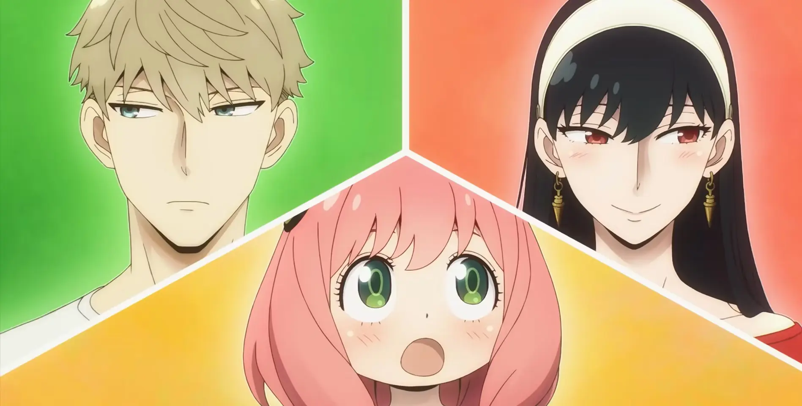
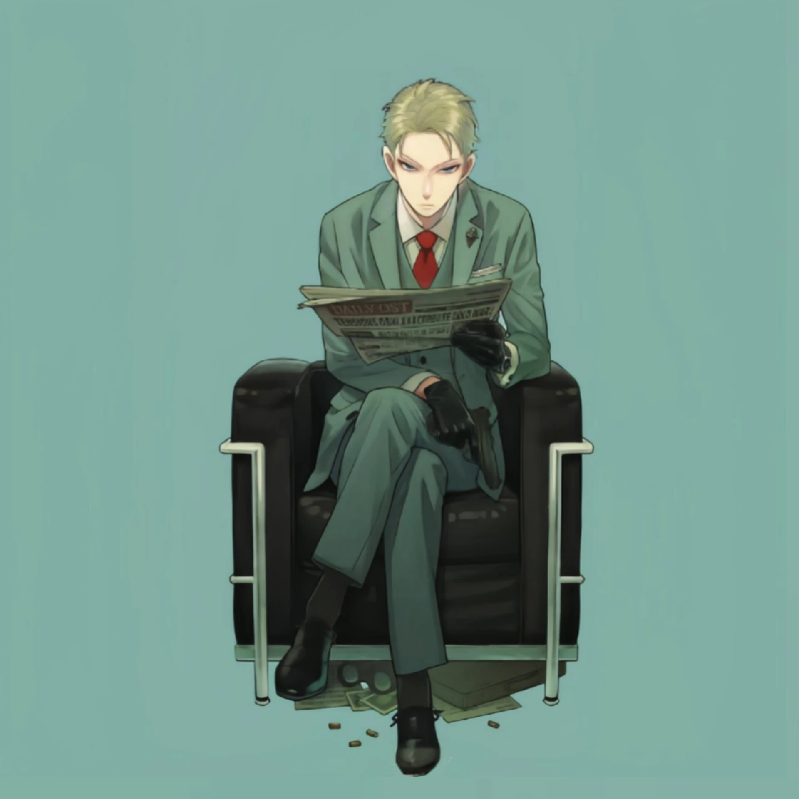
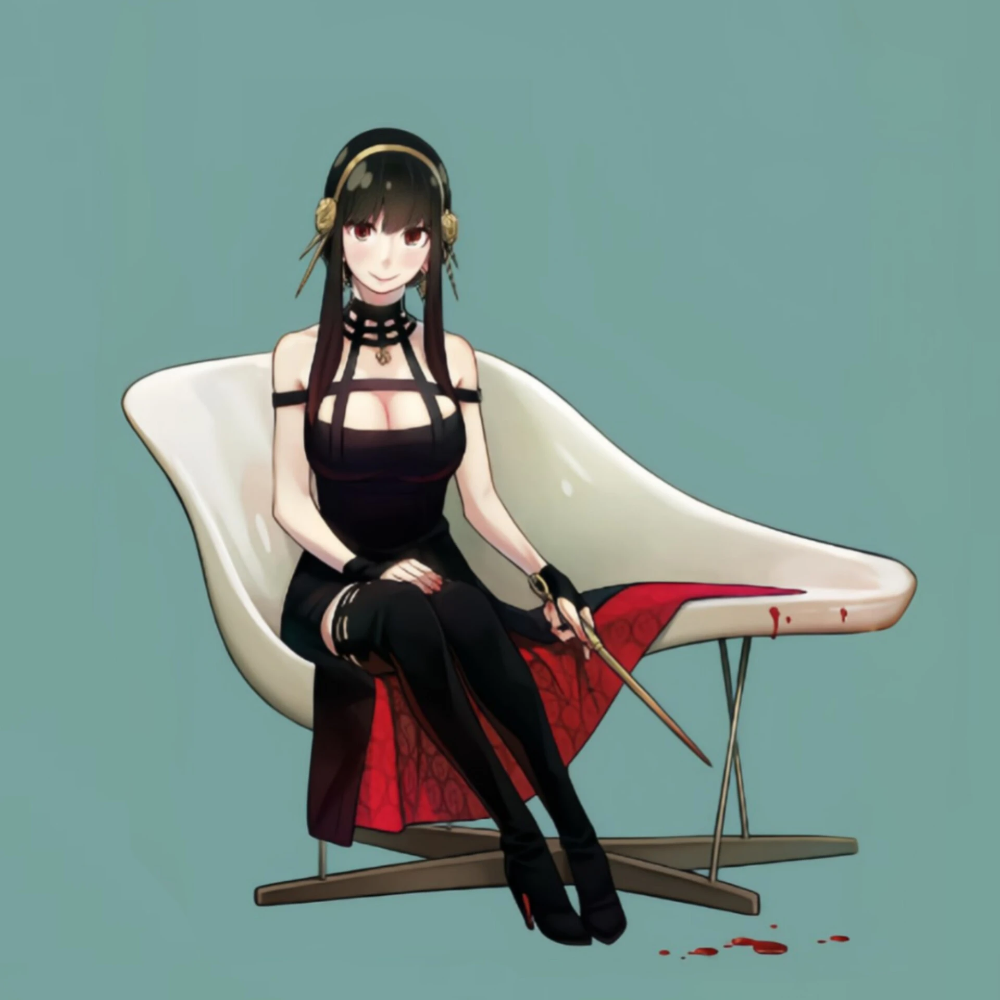
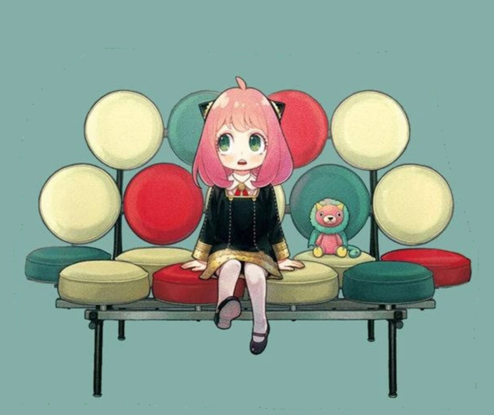
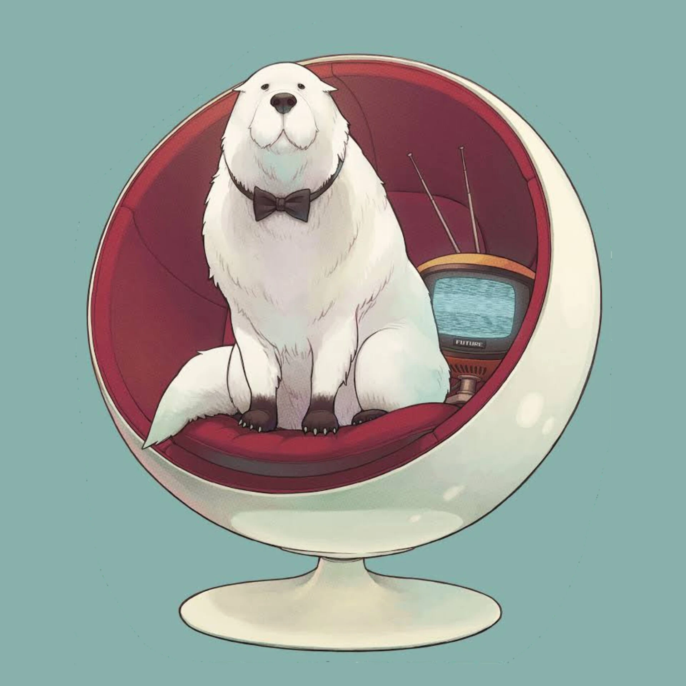
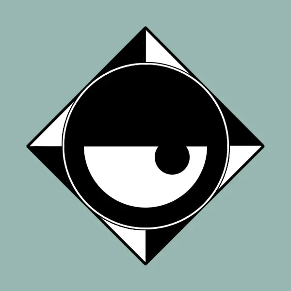

JavaScript
В Этой семье
Живут не обычная семья Папа Шпион, Мама Убийца, а Дочь телепатка.
Лойд Форджер
Он отбросил все, что связано с его прошлым, чтобы работать на свою страну Весталисе в качестве шпиона под прикрытием, действующего под кодовым названием «Сумрак»
узнать подробнееЙор Форджер
при рождении Брайар. Хотя она работает обычной работницей в мэрии Берлинта, она также ведет тайную жизнь в качестве наёмный убийцы с кодовым именем "Тернистая Принцесса"
узнать подробнееАня Форджер
Маленькая девочка, которая в результате экспериментов обрела способность читать мысли. Сбежала из лаборатории, где её заставляли учиться, и оказалась в приюте. От неё отказались четыре семьи, прежде чем её удочерил Лойд Форджер, которому в рамках миссии нужно было создать семью. Благодаря своим способностям знает правду о деятельности Лойда и Йор. Обожает аниме про шпиона Бондмена и арахис.
узнать подробнееБонд Форджер
Огромный белый пёс, который был подопытным животным. В лаборатории, где на нём ставили эксперименты, проходил как Объект номер 7. Не добившись от пса никаких результатов, работники лаборатории решили от него избавиться, так и не поняв, что в ходе опытов пёс приобрёл способности к предвидению. Эта его способность оставалась бы бесполезной, если бы не Аня, которая читает мысли Бонда и с его помощью видит ближайшее будущее.
Countries
OSTANIA
Народная Республика Остания большая страна в Европе, граничащая с востоком Весталиса и являющаяся основным местом действия сериала SPY x FAMILY . Столица Остании — Берлинт.
узнать подробнееSSS
Служба государственной безопасности СГБ (SSS) — контрразведывательное агентство в Остании, созданное для поддержания внутреннего порядка. Их основная цель — выслеживание шпионов и наблюдение за общественностью. Некоторые тактики, которые они используют, включают насилие, прослушивание телефонных разговоров, запугивание и пытки. Из-за своей репутации общественность их боится и называет их тайной полицией.
узнать подробнееWESTALIS
Весталис — страна, граничащая на западе с Останией. Похоже, что это относительно свободная и открытая страна, имеющая положительные отношения с другими западными странами, поэтому считается, что она оправилась от войны быстрее, чем Остания. Стремясь к дальнейшему восстановлению и дипломатической стабильности, их правительство в последнее время сосредоточило внимание на разрядке любых возможных разногласий, в то время как министры и дипломаты активно работают над предотвращением возобновления военных действий с Останией.
узнать подробнееWISE
Вестальская разведывательная служба, более известное как просто WISE , Как следует из названия, они являются подразделением разведки Весталиса, которое занимается поддержанием мира между народами Весталиса и Остании. Это агентство, в котором работает шпионы
узнать подробнее